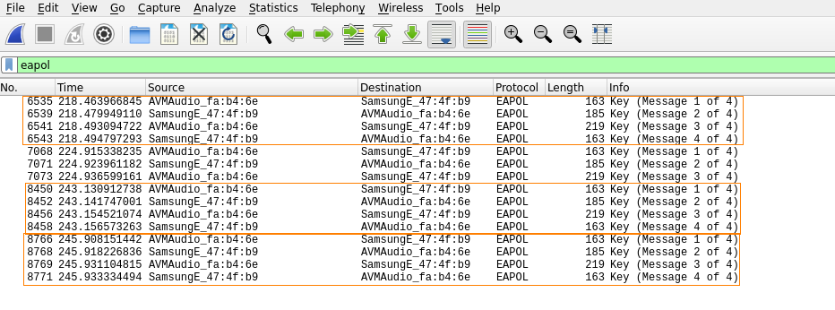

Decrypt communications
Decrypt communications if we know the password of the Access Point
1. Find in the captured file the 4 way WPA handshake
display filter:
eapol
EAPoL (protocol) is the abbreviation of Extensible Authentication Protocol over LAN. EAPoL (Extensible Authentication Protocol over LAN) is a network authentication protocol used in 802.1x (Port Based Natwork Access Control).

2. Before decoding we need to make some changes in the IEEE 802.11 protocol settings.
Go to: Edit → Preferences → expand the protocol section → IEEE 802.11

3. Decryption Keys (Edit) → Create button (+) → for Key type field select wpa-pwd
enter the password for the Wi-Fi network, and after the colon enter the name (SSID) of the network and click OK.
Bibliography:
https://miloserdov.org/?p=2525